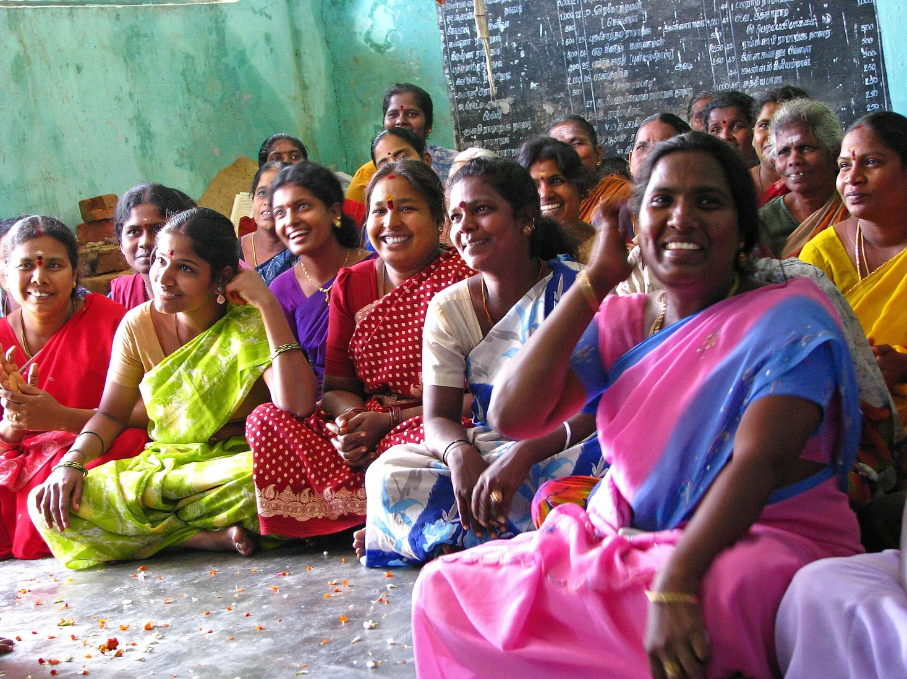

USA
Coordinate with G.ABHINETHRA before sending funds from the USA so the correct trust account and receipt path are used.
For Telugu families in the USA, UK, UAE, Australia, Canada, and beyond, charitable giving needs clarity on FCRA, receipts, and trusted use of funds.
Sending money to family is a remittance. Donating to an Indian nonprofit from abroad is regulated through FCRA compliance. The goal is simple: your care reaches Andhra Pradesh legally, transparently, and with the right receipt trail.

NRI donors should confirm local tax treatment in their country and coordinate transfer details directly with the trust office.
Coordinate with G.ABHINETHRA before sending funds from the USA so the correct trust account and receipt path are used.
Coordinate by phone before sending funds from the UK and keep your transfer confirmation for trust receipt support.
Use the official trust contact number before sending funds from the UAE and retain bank confirmation for records.
Call the trust office before sending funds from Australia and confirm the receipt process in advance.
Canadian donors should verify tax treatment locally and coordinate the transfer with the trust office.
Contact CBN Trust before sending funds so compliance details are correct.
FCRA compliance protects both donor and trust. It ensures foreign contributions enter through the correct registered account and are used for permitted charitable activities.
Yes, but foreign donations must follow FCRA rules and use approved channels.
Tax deductibility depends on your country and personal tax status. CBN Trust can provide donation receipt support, and donors should confirm local tax treatment with their advisor.
Yes. International donors should coordinate with G.ABHINETHRA and use the verified CBN TRUST bank details before sending funds.
Review registration numbers, receipts, field reports, and direct office details before giving.
Yes. Contact CBN Trust for a campaign page, program focus area, and reporting template.
Yes. Donors can discuss program focus preferences with G.ABHINETHRA before giving.